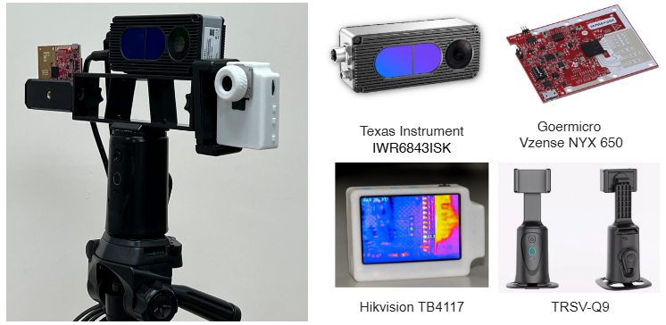
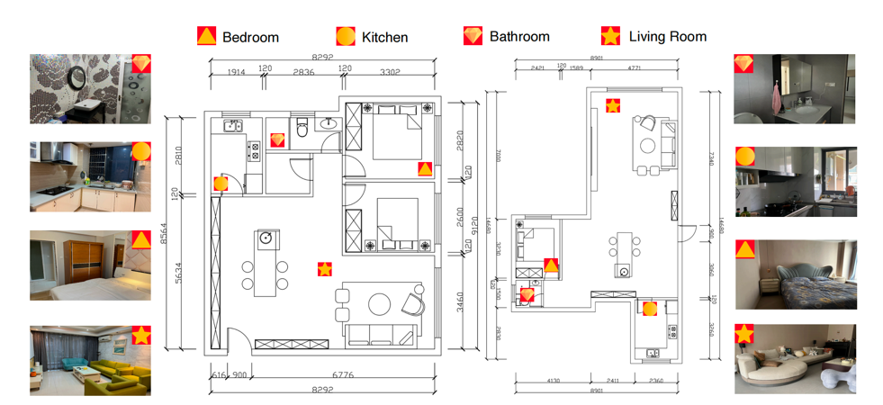
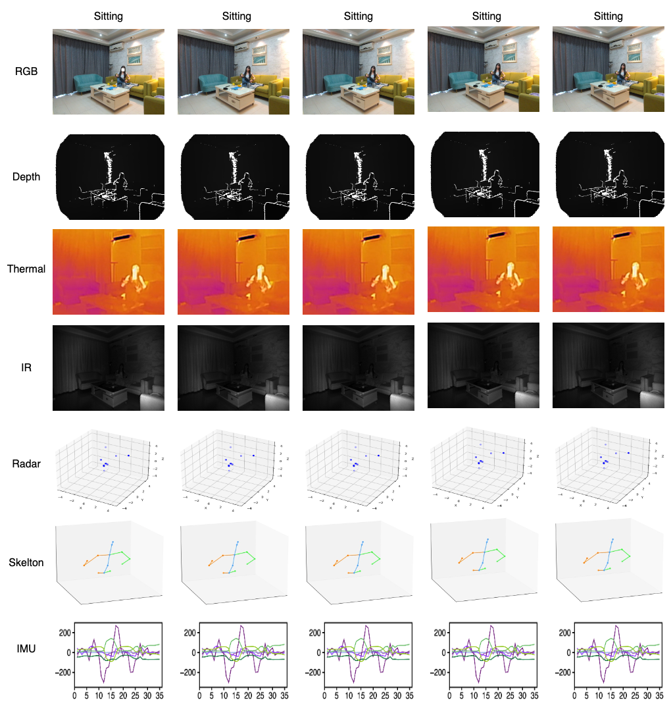
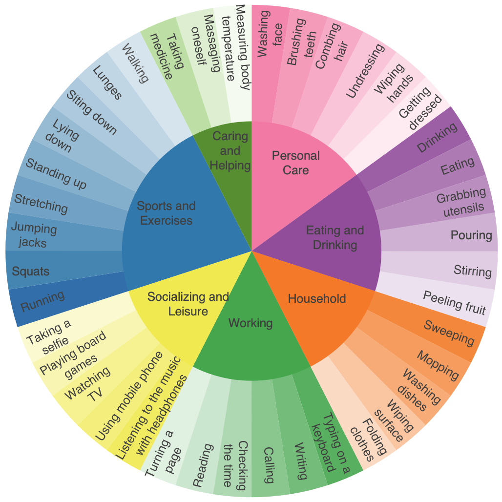
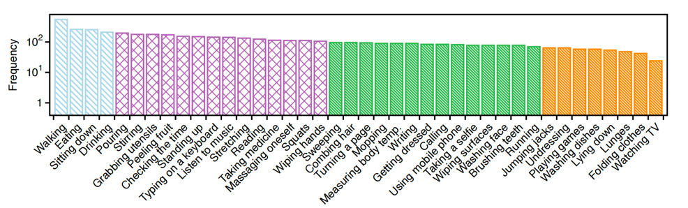

How CUHK-X was captured — the multi-room sensor rig, the seven synchronized modalities, 40 everyday action categories, and what one recording looks like across every stream.
We spans a multi-room home and supports three tasks: HAR, HAU (captioning task), and HARn (question answering task), integrating diverse modalities, including RGB, depth, thermal, infrared, IMU, skeleton, and mmWave, to enable robust perception and reasoning in complex indoor contexts.
CUHK-X was collected using a sophisticated multi-sensor setup ensuring synchronized data capture across all modalities:
RGB-D camera providing color and depth information
mmWave sensing for privacy-preserving motion detection
Motion and orientation tracking with high temporal resolution
Heat signature analysis for environmental robustness
Temporal alignment across all modalities for consistent analysis

Layout with room-wise visual annotations (Bedroom, Kitchen, Bathroom, and Living Room) showing corresponding example images and sensor placements. The icon indicates the location of the ambient sensor:

CUHK-X represents a significant advancement in multimodal human activity datasets, featuring:



This is an example that includes seven modalities: RGB, IR, Thermal, Depth, Skeleton, Radar, and IMU, which were recorded at the same time. We have a 9-axis IMU, but we've only shown these data for simplicity.